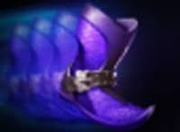
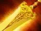
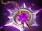
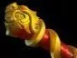
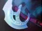

Wraithfire Blast
Оглушает выбранного врага и наносит ему урон.

Керри — позиция 1
В начале игры добивай крипов и не рискуй без необходимости. Используй оглушение, если союзник готов помочь с атакой. Позже фарми линии и лес, участвуй в удобных драках и используй вторую жизнь, чтобы давить на важных врагов.
Добивай крипов обычными атаками. Используй скелетов для зачистки безопасных лагерей и линий. Не бегай по карте без цели и не заходи за опасной волной, если враги пропали с мини-карты.
Оглушает выбранного врага и наносит ему урон.

Призывает скелетов, которые помогают атаковать врагов и зачищать крипов.
Даёт атакам шанс нанести усиленный критический урон.
Позволяет Врайс Кингу возродиться после гибели, если способность готова.





